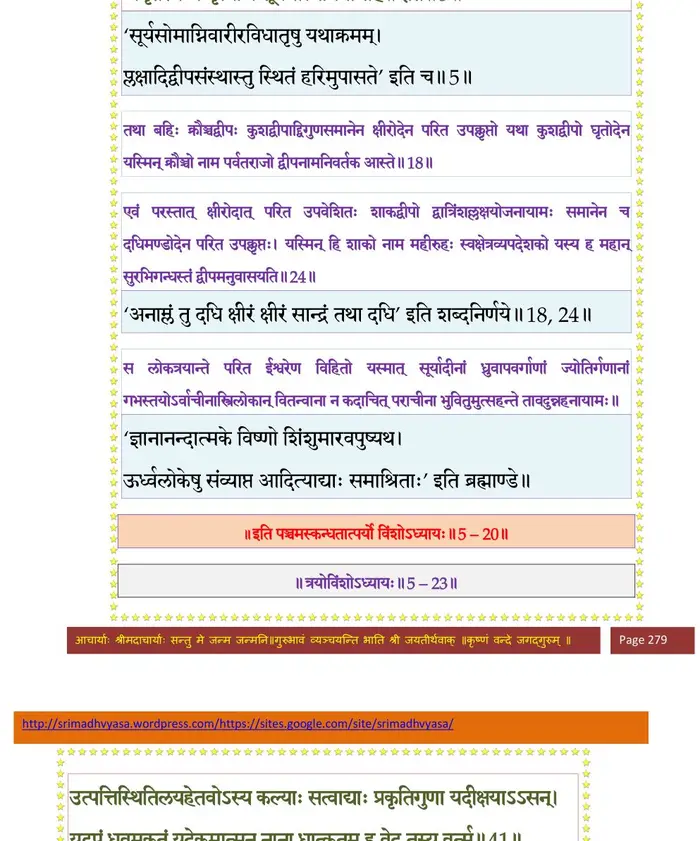
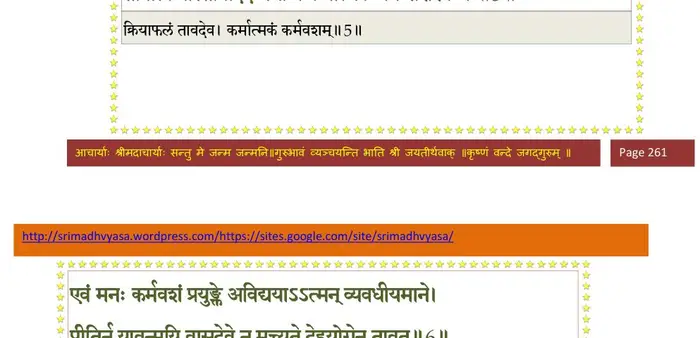

स्कन्ध 5 · अध्याय 20
श्लोक १
श्री शुक उवाच–
अतः परं प्लक्षादिद्वीपानां प्रमाणलक्षणसंस्थानतो वर्षविभाग उपवर्ण्यते ।। १ ।।
अतः परं प्लक्षादिद्वीपानां प्रमाणलक्षणसंस्थानतो वर्षविभाग उपवर्ण्यते ।। १ ।।
श्लोक २
जम्बुद्वीपोऽयं यावान् प्रमाणविस्तारतस्तावता क्षारोदधिना परिवेष्टितो यथा मेरुर्जंब्वाख्येन लवणोदधिरपि ततो द्विगुणविशालेन प्लक्षाख्येन परिक्षिप्तो यथा परिखा बाह्योपवनेन प्लक्षो जम्बूप्रमाणो द्वीपाख्यातिकरो हिरण्मयः उत्थितो यत्राग्निरुपास्ते सप्तजिह्वः तस्याधिपतिः प्रियव्रतात्मज इध्मजिह्वः स्वं द्वीपं सप्त वर्षाणि विभज्य सप्तवर्षनामभ्य आत्मजेभ्य आकलय्य स्वयमात्मयोगेनोपरराम ।। २ ।।
भागवततात्पर्यनिर्णय

श्लोक ३
शिवं यशस्यं सुभद्रं शान्तं क्षेमममृतमभयमिति वर्षाणि तेषु गिरयो नद्यश्च सप्त सप्तैवासन्नभिज्ञाताः ।। ३ ।।
श्लोक ४
मणिकूटो, वज्रकूट, इन्द्रसेनो, ज्योतिष्मान्, धूम्रवर्णो, हिरण्यग्रीवो, मेघमाल इति सेतुशैलाः, अरुणा, अनुगुणा, आङ्गिरसी, सावित्री, सुप्रभाता, ऋतम्भरा, सत्यम्भरेति महानद्यः यासां जलोपस्पर्शनविधूत-रजस्तमसो हंसपतङ्गगोर्ध्वायनसत्याङ्गसंज्ञाश्चत्वारो वर्णाः सहस्रायुषो विबुधोपमसन्दर्शनप्रजननाः स्वर्गद्वारं त्रय्या विद्यया भगवन्तं त्रयीमयं सूर्यात्मानं यजन्ते ।। ४ ।।
श्लोक इति
प्रत्नस्य विष्णो रूपं यत्सत्यर्तस्य ब्रह्मणः ।
अमृतस्य च मृत्योश्च सूर्यमात्मानमीमहि ।। इति ।। ५ ।।
अमृतस्य च मृत्योश्च सूर्यमात्मानमीमहि ।। इति ।। ५ ।।
श्लोक ६
प्लक्षादिषु पञ्चसु पुरुषाणामायुरिन्द्रियमोजः सहोबलं बुद्धिर्विक्रम इति च सर्वेषामौत्पत्तिकी सिद्धिरविशेषेण वर्तते ।। ६ ।।
श्लोक ७
प्लक्षस्तु स्वसमानेनेक्षुरसोदेनावृतो यथा द्वीपोऽपि शाल्मलो द्विगुणविशालः समानेन सुरोदेनावृतः परिवृत्तेन ।। ७ ।।
श्लोक ८
यत्र ह वै शाल्मली प्लक्षायामा यस्यां वा व किल निलयमाहुर्भगव-तच्छन्दःस्तुतः पतत्रिराजस्य साध्यर्धा जम्बूत उपलक्ष्यते ।। ८ ।।
श्लोक ९
तद्द्वीपाधिपतिः प्रियव्रतात्मजो यज्वबाहुः स्वसुतेभ्यस्तन्नामानि सप्त वर्षाणि व्यभजत् सुरोचनं सौमनस्यं रमणकं देवबर्हं पारिभद्रमाप्यायन-मभिजातमिति ।। ९ ।।
श्लोक १०
तेष्वद्रयो नद्यश्च सप्तैवाभिज्ञाताः सुरसः शतशृङ्गो वामदेवः कुन्दो मुकुन्दः पुष्पवर्षः सहश्रुतिरिति अनुमतिः सिनीवाली सरस्वती कुहू रजनी नन्दा राकेति ।। १० ।।
श्लोक ११
तद्वर्षपुरुषाः श्रुतधरवीर्यधरवसुन्धरोर्ध्वधरसंज्ञा भगवन्तं वेदमयं सोम-मात्मानं वेदेन यजन्ते ।। ११ ।।
श्लोक १२
स्वगोभिः पितृदेवेभ्यो विभजन् शुक्लकृष्णयोः ।
अन्धः प्रजानां सर्वासां राजा नः सोममस्त्विति ।। १२ ।।
अन्धः प्रजानां सर्वासां राजा नः सोममस्त्विति ।। १२ ।।
श्लोक १३
एवं सुरोदाद्बहिस्तद्द्विगुणः स्वसमानेनावृतो घृतोदेन यथापूर्वं कुशद्वीपो यस्मिन् कुशस्तबो देवकृतस्तद्द्वीपाख्यापनो ज्वलन इवापरः शश्वत्स्व-शष्परोचिषा दिशो विराजयति ।। १३ ।।
श्लोक १४
तद्द्वीपपतिः प्रैय्यव्रतो राजा हिरण्यरेता नाम स्वद्वीपं सप्तभ्यः पुत्रेभ्यो यथाभागं विभज्य स्वयं तु तप आतिष्ठत् । वसुदानदृढ-रुचिनाभिगुप्त-सत्यव्रतविप्रवामदेवनामभ्यः ।। १४ ।।
श्लोक १५
तेषां वर्षेषु सीमागिरयो नद्यश्चाभिज्ञाताः सप्तसप्तैव तु बभूवुः चक्रः शृङ्गः कपिलश्छिन्नकूटो देवानीक ऊर्ध्वरोमा द्रविण इति ।। १५ ।।
श्लोक १६
रसकुल्या, मधुकुल्या, श्रुतविन्दा, मित्रविन्दा, देवगर्भा, घृतच्युता, मन्त्रमालेति नद्यः यासां पयोभिः कुशद्वीपौकसः कुशलकोविदाभियुक्त-कुशलकसंज्ञा भगवन्तं जातवेदस्वरूपिणं कर्मकौशलेन यजन्ते ।।१६।।
श्लोक १७
परस्य ब्रह्मणः साक्षाज्जातवेदोऽसि हव्यवाट् ।
दैवानां पुरुषाङ्गानां यज्ञेन पुरुषं यज इति।। १७ ।।
दैवानां पुरुषाङ्गानां यज्ञेन पुरुषं यज इति।। १७ ।।
श्लोक १८
तथा बहिः क्रौञ्चद्वीपः कुशद्वीपात् समानेन क्षीरोदेन परित उपक्लृप्तो वृतो यथा कुशद्वीपो घृतोदेन यस्मिन् क्रौञ्चो नाम पर्वतराजो द्वीपनामनिवर्तक आस्ते ।। १८ ।।
श्लोक १९
योऽसौ गुहप्रहरणोन्मथितनितम्बकुञ्जोऽपि क्षीरोदेनासिच्यमानो भगवता वरुणेनाभिगुप्तो विभयो बभूव ।। १९ ।।
श्लोक २०
तस्मिन् प्रैय्यव्रतो घृतपृष्ठो नामाधिपतिः स तु तद्वीपवर्षाणि सप्तधा विभज्य तेषु पुत्रनामसु सप्तारिक्थादान् वर्षपान्निवेश्य स्वयं भगवतः परमकल्याणस्यात्मभूतस्य हरेश्चरणारविन्दमुपजगाम ।। २० ।।
श्लोक २१
आमो मधुमेहो मेघपृष्ठः सुधामा ऋषिज्योतिर्लोहितार्णो वनस्पतिरिति घृतपृष्ठसुतास्तेषां वर्षगिरयः सप्त सप्तैव नद्यश्चाभिख्याताः शुक्लो वर्धमान उपबर्हण उपभोजनो नन्दो नन्दनः सर्वतोभद्र इति ।। २१ ।।
श्लोक २२
अभयाऽमृतौघा आर्यका तीर्थवती रूपवती पवित्रा शुक्लेति यासामम्भः पवित्रममलमुपयुञ्जाना गुरुऋषभद्रविणदेवकसञ्ज्ञा वर्षपुरुषा अम्मयं देवमपां पूर्णेनाञ्जलिना यजन्ते ।। २२ ।।
श्लोक २३
आपः पुरुषवीर्याश्च पुनन्तीर्भूर्भुवः सुवः ।
ता नः पुनीयुरघघ्नीः संस्पृशेतात्मनाऽभवे इति ।। २३ ।।
ता नः पुनीयुरघघ्नीः संस्पृशेतात्मनाऽभवे इति ।। २३ ।।
श्लोक २४
एवं परस्तात्क्षीरोदात्परित उपवेशितः शाकद्वीपो द्वात्रिंशल्लक्षयोजनायामः समानेन च दधिमण्डोदेन परित उपक्लृप्तः यस्मिन् हि शाको नाम महीरुहः स्वक्षेत्रव्यपदेशको यस्य हि महान्सुरभिगन्धस्तद्वर्षमनुवासयति ।। २४ ।।
श्लोक २५
तस्यापि प्रैययव्रत एवाधिपतिर्नाम्ना मेधातिथिः सोऽपि विभज्य सप्त वर्षाणि पुत्रनामानि तेषु स्वात्मजान्पुरोजवमनोजववेपमानधूम्रानीकचित्ररेफ-बहुरूपविश्वाधारसञ्ज्ञान्निधायाधिपतीन् स्वयं भगवत्यनन्त आवेशित-मतिस्तपोवनं प्रविवेश ।। २५ ।।
श्लोक २६
तेषु वर्षमर्यादागिरयो नद्यश्च सप्त सप्त एव ईशान उरुशृृङ्गो बलभद्रः शतकेसरः सहस्रस्रोतो देवपालो महानस इति ।। २६ ।।
श्लोक २७
अनघा आयुर्दा उभयस्पृष्टिरपराजिता पञ्चपदी सहस्रशृृतिर्निजधृतिरिति ।। २७ ।।
श्लोक २८
तद्वर्षेषु पुरुषा धृतव्रतसत्यव्रतदानव्रतानुव्रतनामानो भगवन्तं वाय्वात्मकं प्राणायामविधूतरजस्तमसः परमसमाधिना यजन्ते ।। २८ ।।
भागवततात्पर्यनिर्णय

श्लोक २९
अन्तःप्रविश्य भूतानि यो विभर्त्यात्मकेतुभिः ।
अन्तर्यामीश्वरः साक्षात्पातु नो यद्वशे इदम् इति।। २९ ।।
अन्तर्यामीश्वरः साक्षात्पातु नो यद्वशे इदम् इति।। २९ ।।
श्लोक ३०
एवमेव दधिमण्डोदात्परतः पुष्करद्वीपस्ततो द्विगुणायामः समन्तत उप-कल्पितः समानेन स्वादूदकसमुद्रेण बहिरावृतो यस्मिन्बृहत्पष्करं ज्वलन-शिखामलकनकपत्रायुतं भगवतः कमलासनस्याध्यासनं परिकल्पितं तद्द्वीपमध्ये मानसोत्तरनामैक एवार्वाचीनपराचीनयोर्वर्षयोर्मर्यादाच-लोऽयुतयोजनोच्छ्रायायामो यत्र तु चतसृषु दिक्षु चत्वारि पुराणि लोकपालानामिन्द्रादीनां यदुपरिष्टात्सूर्यरथस्य मेरुं परिक्रमतः संवत्सरात्मक महोरात्राभ्यां चक्रं परिभ्रमति ।। ३० ।।
श्लोक ३१
तद्द्वीपस्याधिपतिः प्रैयव्रतो वीतिहोत्रो नामा स्वस्यात्मजौ रमणकधातुक-नामानौ वर्षपती नियुज्य स्वयं पूर्वजवद्भगवत्कर्मशील एवास्ते ।।३१।।
श्लोक ३२
तद्वर्षपुरुषा भगवन्तं ब्रह्मरूपिणमकर्मकेण कर्मणा चाराधयन्तीदं चोदा-हरन्ति ।। ३२ ।।
श्लोक ३३
यत्ते कर्ममयं लिङ्गं ब्रह्मलिङ्गं जनोऽर्चति ।
भेदेनैकान्तमद्वैतं तस्मै भगवते नम इति ।। ३३ ।।
भेदेनैकान्तमद्वैतं तस्मै भगवते नम इति ।। ३३ ।।
श्लोक ३४
ततः परस्ताल्लोकालोकनामाचलः लोकालोकयोरन्तराले परित उपक्लृप्तः ।। ३४ ।।
श्लोक ३५
यावन्मानसोत्तरमेर्वोरन्तरं तावती भूमिः काञ्चन्यादर्शतलोपमा यस्यां प्रहितः पदार्थो न कथञ्चित्पुनः प्रत्युपलक्ष्यते तस्मात्सर्वसत्व-परिहृताऽऽसीत् ।। ३५ ।।
श्लोक ३६
लोकालोक इति समाख्या यदनेनाचलेन लोकालोकावन्तर्वर्तिना स्थाप्येते इति ।। ३६ ।।
श्लोक ३७
स लोकत्रयान्ते परित ईश्वरेण विहितः यस्मात्सूर्यादीनां ध्रुवापवर्गाणां ज्योतिर्गणानां गभस्तयोऽर्वाचीनांस्त्रिलोकान्वितन्वाना न कदाचित्पराचीना भवितुमुत्सहन्ते तावदुन्नहनायामः ।। ३७ ।।
श्लोक ३८
एतावाल्लोकविन्यासो मानलक्षणसंस्थाभिर्विचिन्तितः कविभिः । स तु पञ्चाशत्कोटिगुणितस्य भूगोलकस्य तुरीयभागो यावाल्लोकालोकाचलः ।। ३८ ।।
श्लोक ३९
तदुपरिष्टाच्चतसृष्वाशास्वात्मयोनिनाऽखिलजगद्गुरुणाऽभिनिवेशिता ये द्विरदपतयः ऋषभः पुष्करचूडो वामनोऽपराजित इति सकललोकस्थिति-हेतवः ।। ३९ ।।
श्लोक ४०
तेषां स्वविभूतीनां महेन्द्रादीनां लोकपालानां विविधवीर्योपबृंहणाय भगवा-न्परममहापुरुषो महाविभूतिपतिरन्तर्याम्यात्मविशुद्धसत्वधर्मज्ञान-वैराग्यैश्वर्याद्यष्टमहासिद्ध्युपलक्षणो विष्वक्सेनादिभिः स्वपार्षदप्रवरैः परिवारितो निजवरायुधोपशोभितैर्भुजदण्डैः सन्धार्यमाणस्तस्मिन् गिरिवरे समन्तात्सकललोकस्वस्तय आस्ते ।। ४० ।।
श्लोक ४१
आकल्पमेष भगवानात्मयोगमायया विरचितविविधलोकयात्रागोपीथायाथ योऽन्तर्विस्तार एतेन ह्यलोकपरिमाणं व्याख्यातम् ।। ४१ ।।
श्लोक ४२
यद्बहिर्लोकालोकाचलात्ततः परस्ताद्योगेश्वरगतिं विशुद्धामुदाहरन्ति ।।४२।।
श्लोक ४३
अण्डमध्यगतः सूर्यो द्यावाभूम्योर्यदन्तरम् ।
सूर्याण्डगोलयोर्मध्ये कोट्यः स्युः पञ्चविंशतिः।। ४३ ।।
सूर्याण्डगोलयोर्मध्ये कोट्यः स्युः पञ्चविंशतिः।। ४३ ।।
श्लोक ४४
मृतेऽण्ड एव एतस्मिन्यदभूत्ततो मार्ताण्ड इति व्यपदेशः ।
हिरण्यगर्भ इति यद्धिरण्याण्डसमुद्भवः।। ४४ ।।
हिरण्यगर्भ इति यद्धिरण्याण्डसमुद्भवः।। ४४ ।।
श्लोक ४५
सूर्येण हि विभज्यन्ते दिशः खं द्यौर्मही तथा ।
स्वर्गापवर्गनरकरसौकांसि च सर्वशः।। ४५ ।।
स्वर्गापवर्गनरकरसौकांसि च सर्वशः।। ४५ ।।
श्लोक ४६
देवतिर्यङ्मनुष्याणां सरीसृपसवीरुधाम् ।
सर्वजीवनिकायानां सूर्य आत्मा दृगीरितः।। ४६ ।।
सर्वजीवनिकायानां सूर्य आत्मा दृगीरितः।। ४६ ।।
।। इति श्रीमद्भागवते पञ्चमस्कन्धे विंशोऽध्यायः ।।